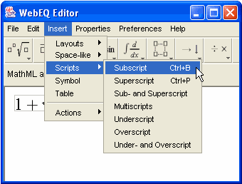
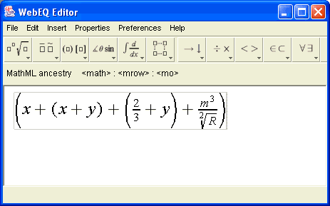

Templates play a central role in MathML. The choice of templates and the way in which templates are nested determine both how the equation will appear, and how easily its mathematical meaning can be inferred by algorithms. Understanding a few basic principles about MathML templates will help you get the most out of WebEQ Editor.
Templates can be inserted from the Toolbar, using Keyboard Shortcuts, or from the Insert Menu, as described in the following sections. Although most templates are available from the toolbar, templates for interactive equations, matrices of any dimension, style changes, and a few other less common MathML templates are only available from the Insert Menu.
Templates are always inserted at the current cursor location.

In general, MathML expects authors to try to group expressions together in rough accordance with the mathematical meaning of the expression. As a consequence, the Expression Group template is extremely important (available on the Insert Layout submenu of the Insert Menu, or from the ctrl-r keyboard shortcut).
An expression group basically acts like an invisible set of parentheses for purposes of clarifying the mathematical structure. Human readers often rely on clues from the surrounding context to guess which parts of an expression go together. Automatic algorithms, however, need more help. For example, many problems that arise in content generation can be solved by explicitly grouping operators and operands with expression groups.
Expression groups also control how symbols stretch. There are many kinds of mathematical symbols that can stretch -- parentheses, brackets, braces, arrows, etc. In authoring equations, you frequently need to control whether these characters stretch and by how much.
In MathML, stretchy symbols automatically grow to cover the other expressions in the same template. Thus, for example, to control the stretching of parentheses, you will frequently need to insert extra expression group templates in order to insure that the parentheses and the expression they surround are alone in a template. Otherwise, the parentheses may unexpectedly grow to match the height of some other part of the equation. This is illustrated below. The first set of nested parentheses are contained in an expression group, while the second set is not:

Most MathML templates have a specific number of blank slots. For example a superscript has two -- a base and a script. To put multiple characters into either slot, it is necessary to wrap them in an expression group template. It is then the expression group which fills the script slot, not the individual characters.
WebEQ Editor can often automatically group and un-group expressions as necessary when performing cut and paste operations. However, in many situations, this is not possible. As a consequence, it is easy to accidently introduce erroneous expression groups in surprising places. For example, it may frequently happen that one or two characters in the middle of an expression may end up grouped as the result of cut and paste, which makes further editing awkward.
The best defense against inappropriate grouping is to learn to notice the gray cursor box that outlines the template in which the cursor is currently located (See Cursor Navigation for illustrations). The MathML Ancestry is also useful for examining the MathML template structure for inappropriate groups.